פשוט להצליח במתמטיקה › כל הנושאים › תרגול ושאלות בגרות מעורבות
תרגול ושאלות בגרות מעורבות – סרטוני הסבר ותרגול
29 סרטוני הסבר ותרגול בנושא תרגול ושאלות בגרות מעורבות – לכיתה ז׳, כיתה ח׳, כיתה ט׳, שאלון 471, שאלון 571. כל נושא מוסבר מהקל אל הקשה: קודם הרעיון, אחר כך תרגילים, ובסוף שאלות בסגנון בגרות. הכול בחינם, בשיטת "פשוט להצליח".
רוצים לעקוב אחרי ההתקדמות?נרשמים בחינם, וכל סרטון שראיתם מסומן ✓. ממשיכים מכל מכשיר.
הצטרפות בחינם ←תרגול ושאלות בגרות מעורבות – כיתה ז׳ כל הנושאים של כיתה ז׳ ←
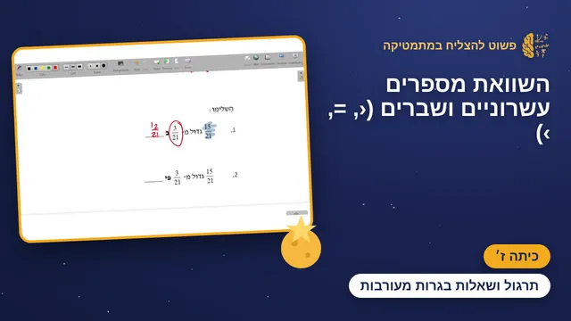
השוואת מספרים עשרוניים ושברים (‹, =, ›) עצירת התרעננות כיתה ז – תרגילים מתוקים 4
עצירת התרעננות כיתה ז – תרגילים מתוקים 4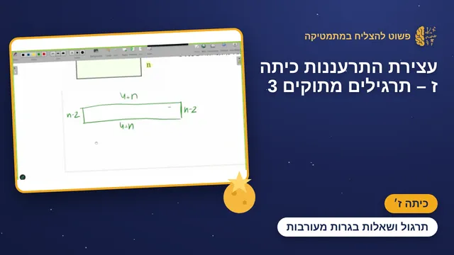
עצירת התרעננות כיתה ז – תרגילים מתוקים 3 עצירת התרעננות כיתה ז – תרגילים מתוקים 2
עצירת התרעננות כיתה ז – תרגילים מתוקים 2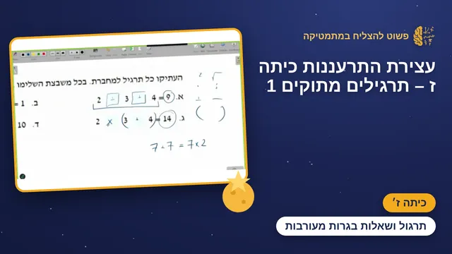
עצירת התרעננות כיתה ז – תרגילים מתוקים 1 עצירת התרעננות כיתה ז – תרגילים מתוקים 6
עצירת התרעננות כיתה ז – תרגילים מתוקים 6 עצירת התרעננות כיתה ז – תרגילים מתוקים 5
עצירת התרעננות כיתה ז – תרגילים מתוקים 5תרגול ושאלות בגרות מעורבות – כיתה ח׳ כל הנושאים של כיתה ח׳ ←
 הכנה למבחן כיתה ח 3
הכנה למבחן כיתה ח 3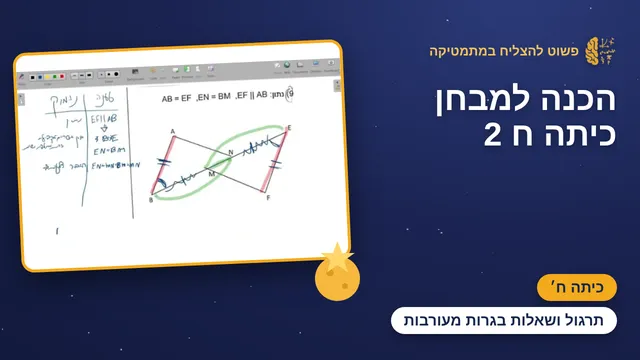
הכנה למבחן כיתה ח 2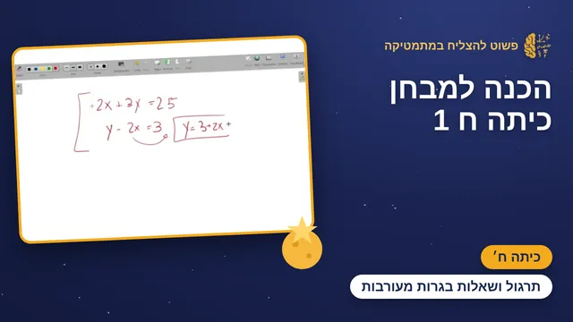
הכנה למבחן כיתה ח 1מבחן כיתה ח – תרגול חוזרתרגול ושאלות בגרות מעורבות – כיתה ט׳ כל הנושאים של כיתה ט׳ ←
תרגול ושאלות בגרות מעורבות – שאלון 471 כל הנושאים של שאלון 471 ←
 בגרות 471 מתמטיקה 4 יח שאלות בגרות שאלה 4 3
בגרות 471 מתמטיקה 4 יח שאלות בגרות שאלה 4 3 בגרות 471 מתמטיקה 4 יח שאלה 6 שאלות בגרות 1
בגרות 471 מתמטיקה 4 יח שאלה 6 שאלות בגרות 1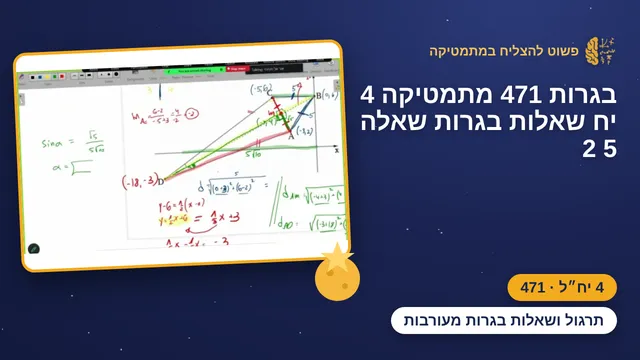
בגרות 471 מתמטיקה 4 יח שאלות בגרות שאלה 5 2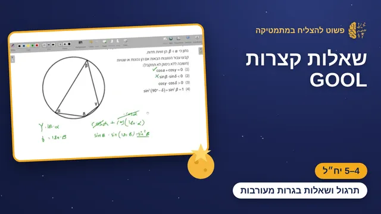
שאלות קצרות GOOLתרגיל 10 עמ' 854 (יואל גבע חלק ב כחול) תרגיל 29 עמ' 851 (יואל גבע חלק ב כחול)תרגיל 23 עמ' 869 (יואל גבע חלק ב כחול)
תרגיל 29 עמ' 851 (יואל גבע חלק ב כחול)תרגיל 23 עמ' 869 (יואל גבע חלק ב כחול)תרגול ושאלות בגרות מעורבות – שאלון 571 כל הנושאים של שאלון 571 ←
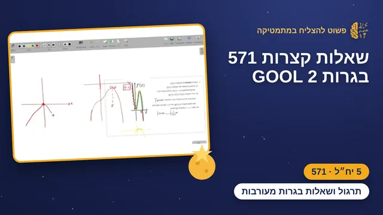
שאלות קצרות 571 בגרות GOOL 2 שאלות קצרות 571 בגרות GOOLשאלות קצרות GOOL
שאלות קצרות 571 בגרות GOOLשאלות קצרות GOOL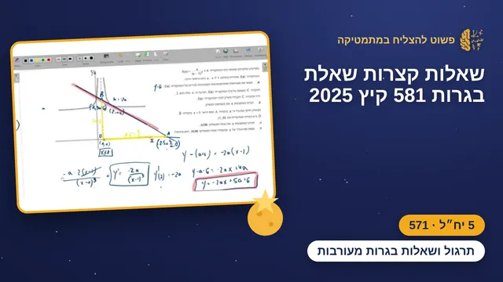
שאלות קצרות שאלת בגרות 581 קיץ 2025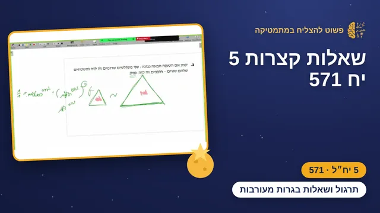
שאלות קצרות 5 יח 571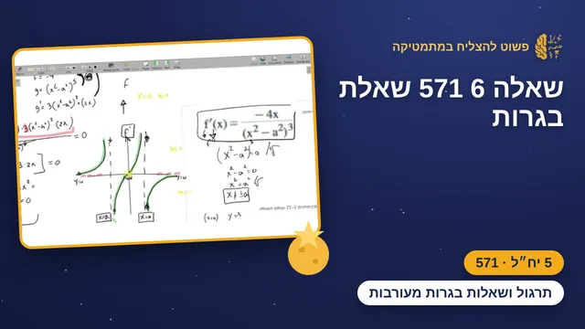
שאלה 6 571 שאלת בגרות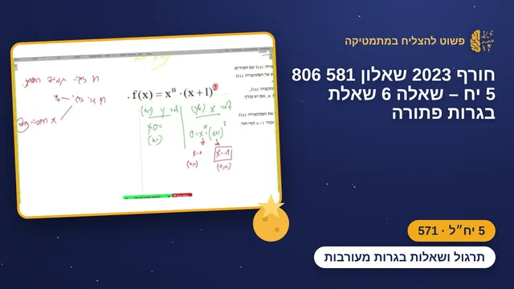
חורף 2023 שאלון 581 806 5 יח – שאלה 6 שאלת בגרות פתורה חורף 2021 מועד א שאלה 8 806 581
חורף 2021 מועד א שאלה 8 806 581 תרגיל 12 עמ' 643 (יואל גבע חלק ג) 5 יח
תרגיל 12 עמ' 643 (יואל גבע חלק ג) 5 יח תרגיל 13 עמ' 639 (יואל גבע חלק ג) 5 יחתרגיל 9 עמ' 638 (יואל גבע חלק ג) 5 יחתרגיל 10 עמ' 854 (יואל גבע חלק ב כחול)תרגיל 29 עמ' 851 (יואל גבע חלק ב כחול)תרגיל 23 עמ' 869 (יואל גבע חלק ב כחול)
תרגיל 13 עמ' 639 (יואל גבע חלק ג) 5 יחתרגיל 9 עמ' 638 (יואל גבע חלק ג) 5 יחתרגיל 10 עמ' 854 (יואל גבע חלק ב כחול)תרגיל 29 עמ' 851 (יואל גבע חלק ב כחול)תרגיל 23 עמ' 869 (יואל גבע חלק ב כחול)